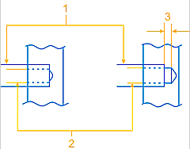
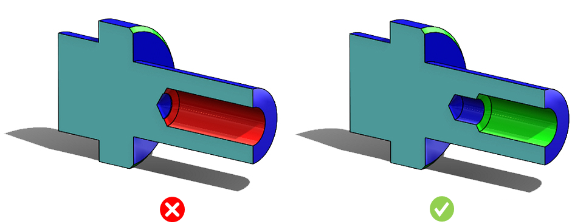

止まりの中ぐり穴は、穴の端部に工具逃げを設けて定義する必要があります（すなわち、中ぐり穴の深さ ＝ 下穴の深さ ＋ 逃げ量）。
中ぐり穴の端部に逃げを設けることで、ホーニング、中ぐり、リーマ加工、研削といった加工工程が容易になり、全体的なコスト削減につながります。
ルール構成ダイアログボックスでは、穴端部の逃げ量を絶対値でチェックすることができます。
逃げ量の最小値は下穴径に対する百分率として表され、設定可能です。

ここで、
1 = 中ぐり穴径
2 = 下穴径
3 = 中ぐり穴端部の逃げ
中ぐり穴の端部において、逃げ量のデフォルト設定値は、中ぐり穴径の 3% 以上である必要があります。
